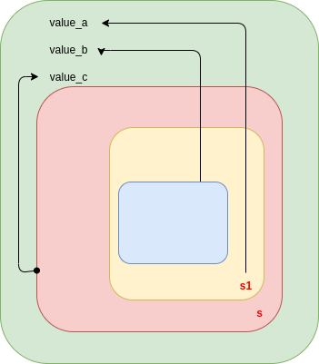

Rayon
子模块
- array：对arrays (
[T; N])并发迭代器。 - collections：针对 standard collections的并发迭代器
- iter：使用迭代器风格的并发程序trait。
- option： option类型的并发迭代器
- prelude：
ParallelIterator的trait，use rayon::prelude::*包含你需要的多种trait。 - range：针对ranges的迭代器类型，类型通过
a..b表达式创建。 - range_inclusive：针对 inclusive ranges的迭代器类型，通过
a..=b创建。 - result：针对result的并发迭代器。
- slice：针对slice的并发迭代器。
- str：针对string的并发迭代器。
- string：针对 拥有strings (
String)的并发迭代器模块，你很少需要直接和其交互，除非你需要迭代器类型的名称。 - vec：
Vec<T>的并发迭代器类型。
结构体
- BroadcastContext：为broadcast提供一个闭包上下文。
- FnContext：提供
join_context调用的上下文闭包。 - Scope：提供可以生成任意数量任务的fork-join scope。
- ScopeFifo：可以被任意数量任务使用的fork-join scop。这些生成来自于相同的线程然后以优先队列FIFO的顺序生成。查看scope_fifo() 获取更多信息。
- ThreadBuilder：用于通过ThreadPoolBuilder::spawn_handler实例化的builder。
- ThreadPool：代表用户创建的 thread-pool.
- ThreadPoolBuildError：初始化线程池错误时产生错误。
- ThreadPoolBuilder：创建ThreadPool或者配置全局线程池。
Enums
- Yield：结果 yield_now() or yield_local().
函数
- broadcast：线程池中的每个线程执行
op。如果它被非Rayon线程调用，它将在全局线程池中调用，任何尝试使用join、scope或者并发迭代器都将在线程池中。当调用完成后，返回所有线程返回值的向量。 - current_num_threads：返回当前等级的线程池数量，如果代码在Rayon线程池中执行，它将成为当前线程池中的一员。否则，它将成为全局线程池中的一员。
- current_thread_index：如果调用来自Rayon worker线程，返回在它的当前线程池中的线程索引；如果没有从Rayon线程调用，返回None。
- in_place_scope：创建一个fork-join scope s 同时产生一个s的引用的闭包。这个闭包可以产生异步任务加入s。这些任务可以运行对应的异步任务，它们可以生成额外的任务到s，当闭包返回，他将阻塞直到s中生成的任务完成。
- in_place_scope_fifo：以FIFO的顺序创建一个form-join的scopes s，以s的引用调用闭包，这个闭包可以生成异步的任务加入到s。这些任务在对应的闭包重异步运行，它们也许添加额外的任务到s.当闭包返回的时候，它将阻塞直到s重的所有任务完成。
- join：获取两个闭包然后并行运行，它返回两个闭包的结果对。
- join_context：和join类似，除了闭包有参数提供给context，这里的join_context被调用的时候，特别指示是否它们正在不同的线程上执行。如果第二个任务被拨通的线程移动走或者如果join_context被外部的线程池调用的时候出现。
- max_num_threads：返回Rayon单个线程池支持的最大数量的线程数。
- scope：创建一个fork-join的scope s，在s的引用上调用闭包。这个闭包可以添加异步任务到s。这些任务可以再对应的闭包上异步运行。它们也许生成额外的任务添加到s。当闭包返回的时候它将阻塞直到所有的生成的任务完成。
- scope_fifo：以FIFO顺序创建一个fork-join的scope s，在s的引用上调用闭包。这个闭包可以添加异步任务到s。这些任务可以再对应的闭包上异步运行。它们也许生成额外的任务添加到s。当闭包返回的时候它将阻塞直到所有的生成的任务完成
- spawn：在static和global scope中发射任务到Rayon的线程池。类似标准线程，这个任务不会尝试当前栈帧，因此它不能拥有任何其他的’static声明周期的引用。如果你想生成栈数据的引用，使用scope()创建一个scope。
- spawn_broadcast：在线程池中的每个线程生成一个异步任务，这个任务将运行在全局scope，这意味着它可能除了当前栈帧，因此，他不能捕获任何引用栈到将来需要移动的闭包。
- spawn_fifo：在static和global scope中发射任务到Rayon的线程池。类似标准线程，这个任务不会尝试当前栈帧，因此它不能拥有任何其他的’static声明周期的引用。如果你想生成栈数据的引用，使用scope()创建一个scope。
- yield_local：在本地Rayon工作中生成执行。
- yield_now：在Rayon中生成执行。
rayon::Scope
表示一个fork join的scope，用来生成任意数量的任务。
use rayon::prelude::*;
fn main() {
let mut value_a = None;
let mut value_b = None;
let mut value_c = None;
rayon::scope(|s| {
s.spawn(|s1| {
// ^ this is the same scope as `s`; this handle `s1`
// is intended for use by the spawned task,
// since scope handles cannot cross thread boundaries.
value_a = Some(22);
// the scope `s` will not end until all these tasks are done
s1.spawn(|_| {
value_b = Some(44);
});
});
s.spawn(|_| {
value_c = Some(66);
});
});
assert_eq!(value_a, Some(22));
assert_eq!(value_b, Some(44));
assert_eq!(value_c, Some(66));
}
上述spawn操作的示意图如
spawn_broadcast<BODY>(&self, body: BODY)：生成一个工作加入到每个线程。这个工作在fork线程没有结束调用之前在每个线程上执行。指定工作通过闭包实现。
rayon::ThreadBuilder
常规方法：
index(&self) -> usize：获取线程池中的线程索引，形式为1…num_threads。name(&self) -> Option<&str>：通过ThreadPoolBuilder::name()获取名称。stack_size(&self) -> Option<usize>:通过ThreadPoolBuilder::stack_size()获取栈大小。fn run(self):当前线程执行主循环，直到线程池被删除时返回。
rayon::ThreadPool
使用ThreadPoolBuilder指定线程池中的线程数，在调用ThreadPoolBuilder::build()之后，你可以使用ThreadPool::install()执行线程池中的函数。相比较之下，顶层的rayon函数（join）将在当前线程池中之行。install函数在线程池中执行闭包，任何其他在install中的操作都在ThreadPool的上下文中执行。线程池被删除的时候将保证线程池中的任务完成执行然后自动终止。
install<OP, R>(&self, op: OP) -> R where OP: FnOnce() -> R + Send,R: Send：函数接口，在线程池中执行op，任何尝试使用scope、join或者其他并发迭代器将在线程池中执行。因为线程池中的线程正在执行，来自当前线程的thread-local将不被访问。broadcast<OP, R>(&self, op: OP) -> Vec<R, Global> where OP: Fn(BroadcastContext<'_>) -> R + Sync,R: Send:线程池中的每个线程都执行op。任何尝试使用scope、join或者其他并发迭代器都将在线程池中执行broadcast在每个线程上执行之后他们耗尽自己的队列，在你尝试从其他线程work-stealing之前。这个策略的目标是及时在任意地方运行策略而不打断任何工作。如果需要的话将来可能添加其他的广播方式或多或少进行注入。current_num_threads(&self) -> usize:获取线程池中的线程数。除非ThreadPoolBuilder指定线程数，否则将来这个数可能和当前有所不同。current_thread_index(&self) -> Option<usize>:获取当前线程池中的线程索引，如果线程在线程池中不存在则返回None。同一个线程池中的线程的索引是第一无二的，不同的线程池中的线程索引可能相同。在将来一个线程结束后其索引可能被重用。current_thread_has_pending_tasks(&self) -> Option<bool>:join<A, B, RA, RB>(&self, oper_a: A, oper_b: B) -> (RA, RB) where A: FnOnce() -> RA + Send, B: FnOnce() -> RB + Send,RA: Send,RB: Send,:如果当前线程有一个任务等待挂起则为ture，这对于启发式算法决定是否生成一个新的线程完成任务的场景下非常有用，需要记得的是内部固有的检查，其他工作线程可能会积极地从当前队列偷任务。rayon使用一个 work-stealing 调度策略。关键的想法是每个线程都有自己的任务队列，一旦新的任务产生，无论是通过spwan、join方式产生新的任务会被加入到线程的本地队列。工作线程偏向于执行自己队列里面的任务，如果他们的任务运行完毕，他们将尝试从其它线程偷任务。函数因此会有一个和其他活跃线程的内部竞争，这会导致当前线程的任务可能会从自己的local队列里面移走。join<A, B, RA, RB>(&self, oper_a: A, oper_b: B) -> (RA, RB):在线程池中执行当前oper_a和oper——b任务，等效于self.install(|| join(oper_a, oper_b))。scope<'scope, OP, R>(&self, op: OP) -> R where OP: FnOnce(&Scope<'scope>) -> R + Send, R: Send:在线程池中创建一个scope，等效于：self.install(|| scope(...))。scope_fifo<'scope, OP, R>(&self, op: OP) -> R where OP: FnOnce(&ScopeFifo<'scope>) -> R + Send,R: Send:和scope功能一样，不同在于线程优先级为FIFO。in_place_scope<'scope, OP, R>(&self, op: OP) -> R Where OP: FnOnce(&Scope<'scope>) -> R:创建一个scope然后生成一个线程。in_place_scope_fifo<'scope, OP, R>(&self, op: OP) -> R where OP: FnOnce(&ScopeFifo<'scope>) -> R:和in_place_scope相同，按照FIFO优先级创建工作。spawn<OP>(&self, op: OP) where OP: FnOnce() + Send + 'static:在线程池中生成一个异步任务这个任务将隐式运行。spawn_fifo<OP>(&self, op: OP) where OP: FnOnce() + Send + 'static:在线程池中生成一个异步任务，任务将隐式在全局scope中运行，着意味着他可能比当前栈帧存活时间更久，因此不能捕获任何引用到当前栈帧（你需要显式的move）。spawn_broadcast<OP>(&self, op: OP) where OP: Fn(BroadcastContext<'_>) + Send + Sync + 'static:线程池中每个线程生成一个异步任务，隐式在全局scope运行，它的存活时间可能更久，以至于不能捕获任何变量到栈帧。（你需要move）yield_now(&self) -> Option<Yield>:类似于常规的yield_now()，仅仅是当前线程的一部分时可用，生成Rayon执行，如果有任何执行则返回Some(Yield::Executed)如果没有任何可用则Some(Yield::Idle)，如果当前线程不是线程池的一部分则返回None。yield_local(&self) -> Option<Yield>:类似于常规的yield_local(),仅仅是当前线程是线程池的一部分时可用。如果有任何执行返回Some(Yield::Executed)，如果没有可用则返回Some(Yield::Idle)，如果当前线程不是这个线程池的一部分则返回None。
use rayon::*;
fn main() {
// 创建8个线程的线程池
let pool = ThreadPoolBuilder::new().num_threads(8).build().unwrap();
let n = pool.install(|| fib(20));//将计算fib（20）的任务给线程池中的线程
println!("fib {}", n);
}
fn fib(n: usize) -> usize {
if n == 0 || n == 1 {
return n;
}
let (a, b) = rayon::join(|| fib(n - 1), || fib(n - 2));//并发
return a + b;
}线程池的广播操作：
rayon::*;
use std::sync::atomic::{AtomicUsize, Ordering};
fn main() {
let pool = rayon::ThreadPoolBuilder::new()
.num_threads(5)
.build()
.unwrap();
// The argument gives context, including the index of each thread.
let v: Vec<usize> = pool.broadcast(|ctx| ctx.index() * ctx.index());
assert_eq!(v, &[0, 1, 4, 9, 16]);
// The closure can reference the local stack
let count = AtomicUsize::new(0);
pool.broadcast(|_| count.fetch_add(1, Ordering::Relaxed)); //当前线程的变量count，每个线程对其+1
assert_eq!(count.into_inner(), 5);
}ThreadPoolBuilder
用于创建一个新的线程池或者是配置Rayon的全局线程。
// 创建一个包含22个线程的线程池
let pool = rayon::ThreadPoolBuilder::new().num_threads(22).build().unwrap();常见方法
new() -> ThreadPoolBuilder<DefaultSpawn>:创建并返回有效的线程池构建器，但不初始化它。build(self) -> Result<ThreadPool, ThreadPoolBuildError>:使用此配置创建一个新的初始化的线程池。build_global(self) -> Result<(), ThreadPoolBuildError>:初始化全局线程池。此初始化是可选的。如果不调用该函数，线程池会自动初始化为默认配置。build_global不建议调用，但以下两种情况除外：- 您希望更改默认配置。
- 您正在运行基准测试，在这种情况下，初始化可能会产生稍微更一致的结果，因为工作线程甚至在第一次迭代中就已经准备就绪。但这个成本是最小的。
- 全局线程池的初始化只发生一次。一旦启动，配置就无法更改。因此，如果第二次调用build_global，将会返回错误。结果Ok表明这是线程池的第一次初始化。
build_scoped<W, F, R>(self,wrapper: W,with_pool: F) -> Result<R, ThreadPoolBuildError>:ThreadPool创建使用此配置初始化的作用域。这是一个方便的函数，用于构建一个线程池，用于std::thread::scope 在spawn_handler. 该池中的线程将通过调用启动wrapper，该调用应该进行初始化并通过调用继续ThreadBuilder::run()。
scoped_tls::scoped_thread_local!(static POOL_DATA: Vec<i32>);
fn main() -> Result<(), rayon::ThreadPoolBuildError> {
let pool_data = vec![1, 2, 3];
// We haven't assigned any TLS data yet.
assert!(!POOL_DATA.is_set());
rayon::ThreadPoolBuilder::new()
.build_scoped(
// Borrow `pool_data` in TLS for each thread.
|thread| POOL_DATA.set(&pool_data, || thread.run()),
// Do some work that needs the TLS data.
|pool| pool.install(|| assert!(POOL_DATA.is_set())),
)?;
// Once we've returned, `pool_data` is no longer borrowed.
drop(pool_data);
Ok(())
}spawn_handler<F>(self, spawn: F) -> ThreadPoolBuilder<CustomSpawn<F>> where F: FnMut(ThreadBuilder) -> Result<(), Error>:设置用于生成线程的自定义函数。请注意，直到池被删除后，线程才会退出。如果线程终止对于任何不变量很重要，则由调用者决定等待线程终止。例如，创建的线程std::thread::scope 将在该作用域返回之前加入，如果池泄漏，这将无限期地阻塞。此外，全局线程池在整个进程退出之前不会终止！
fn main() -> Result<(), rayon::ThreadPoolBuildError> {
let pool = rayon::ThreadPoolBuilder::new()
.spawn_handler(|thread| {
std::thread::spawn(|| thread.run());
Ok(())
})
.build()?;
pool.install(|| println!("Hello from my custom thread!"));
Ok(())
}
默认的生成处理程序设置名称和堆栈大小（如果给定），并传播来自线程构建器的任何错误。
fn main() -> Result<(), rayon::ThreadPoolBuildError> {
let pool = rayon::ThreadPoolBuilder::new()
.spawn_handler(|thread| {
let mut b = std::thread::Builder::new();
if let Some(name) = thread.name() {
b = b.name(name.to_owned());
}
if let Some(stack_size) = thread.stack_size() {
b = b.stack_size(stack_size);
}
b.spawn(|| thread.run())?;
Ok(())
})
.build()?;
pool.install(|| println!("Hello from my fully custom thread!"));
Ok(())
}这也可以用于作用域线程池，例如crossbeam::scope，或std::thread::scope在 Rust 1.63 中引入，它封装在 build_scoped:
fn main() -> Result<(), rayon::ThreadPoolBuildError> {
std::thread::scope(|scope| {
let pool = rayon::ThreadPoolBuilder::new()
.spawn_handler(|thread| {
let mut builder = std::thread::Builder::new();
if let Some(name) = thread.name() {
builder = builder.name(name.to_string());
}
if let Some(size) = thread.stack_size() {
builder = builder.stack_size(size);
}
builder.spawn_scoped(scope, || {
// Add any scoped initialization here, then run!
thread.run()
})?;
Ok(())
})
.build()?;
pool.install(|| println!("Hello from my custom scoped thread!"));
Ok(())
})
}thread_name<F>(self, closure: F) -> ThreadPoolBuilder<S> where F: FnMut(usize) -> String + 'static:设置一个闭包，它接受线程索引并返回线程的名称。num_threads(self, num_threads: usize) -> ThreadPoolBuilder<S>:设置线程池中使用的线程数。如果使用此函数指定非零数量的线程，则生成的线程池保证最多启动此数量的线程。如果num_threads为0，或者不调用该函数，那么Rayon运行时会自动选择线程数。目前，这是基于RAYON_NUM_THREADS环境变量（如果设置）或逻辑 CPU 的数量（否则）。然而，将来，默认行为可能会更改为根据需要动态添加或删除线程。未来兼容性警告：鉴于默认行为将来可能会发生变化，如果您希望依赖固定数量的线程，则应使用此函数来指定该数量。要重现当前的默认行为，您可能希望使用std::thread::available_parallelism动态查询 CPU 的数量。
旧环境变量： RAYON_NUM_THREADS是现已弃用的环境变量的一对一替换RAYON_RS_NUM_CPUS。如果两个变量都被指定，RAYON_NUM_THREADS则将是首选。use_current_thread(self) -> ThreadPoolBuilder<S>:使用当前线程作为池中的线程之一。当前线程保证位于索引 0，并且由于该线程不是由 rayon 管理，因此不会为该线程运行生成和退出处理程序。请注意，当前线程不会运行主工作窃取循环，因此生成到线程池中的作业通常不会被该线程自动拾取，除非您以某种方式屈服于 rayon，例如 via yield_now()、yield_local()或scope()。本地线程池:在本地线程池中使用它意味着注册表将被泄漏。在未来的版本中可能会有一种清理当前线程状态的方法。panic_handler<H>(self, panic_handler: H) -> ThreadPoolBuilder<S>:通常，每当 Rayon捕获panic时，它都会尝试将其传播到合理的地方，以尝试反映顺序执行的语义。但在某些情况下，尤其是spawn()API，我们没有明显的地方可以传播panic。在这种情况下，将调用此panic处理程序。如果没有设置panic处理程序，则默认情况下会中止进程，原则上panic不应被忽视。如果panic处理程序本身发生panic，这将中止该过程。为了防止这种情况，请将panic处理程序的主体包含在对 的调用中std::panic::catch_unwind()。stack_size(self, stack_size: usize) -> ThreadPoolBuilder<S>:设置工作线程的堆栈大小。start_handler<H>(self, start_handler: H) -> ThreadPoolBuilder<S> where H: Fn(usize) + Send + Sync + 'static:设置在线程启动时调用的回调。闭包将传递调用它的线程的索引。请注意，同一个闭包可能会并行调用多次。如果这个闭包发生panic，panic将被传递给panic处理程序。如果该处理程序返回，则启动将正常继续exit_handler<H>(self, exit_handler: H) -> ThreadPoolBuilder<S> where H: Fn(usize) + Send + Sync + 'static:设置在线程退出时调用的回调。闭包将传递调用它的线程的索引。请注意，同一个闭包可能会并行调用多次。如果这个闭包发生panic，panic将被传递给panic处理程序。如果该处理程序返回，则线程将正常退出。